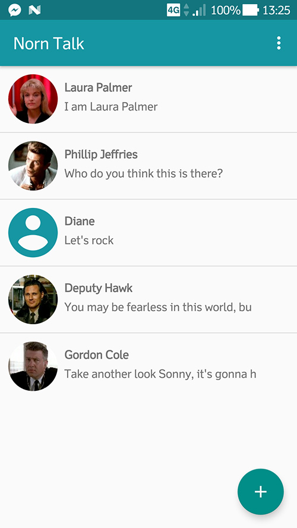
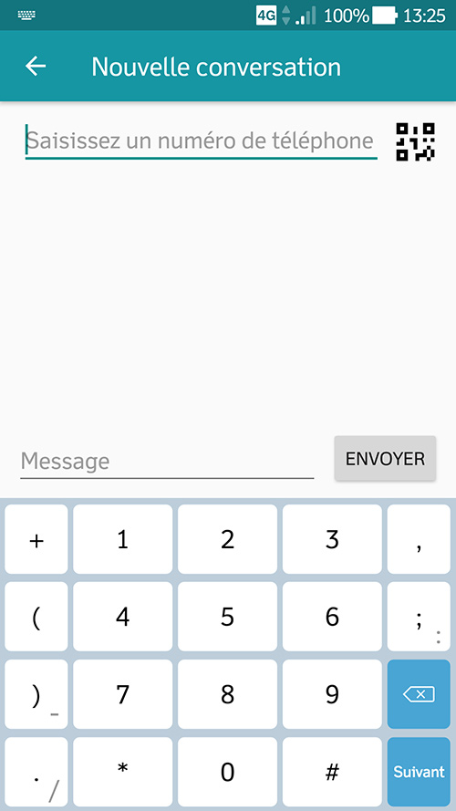
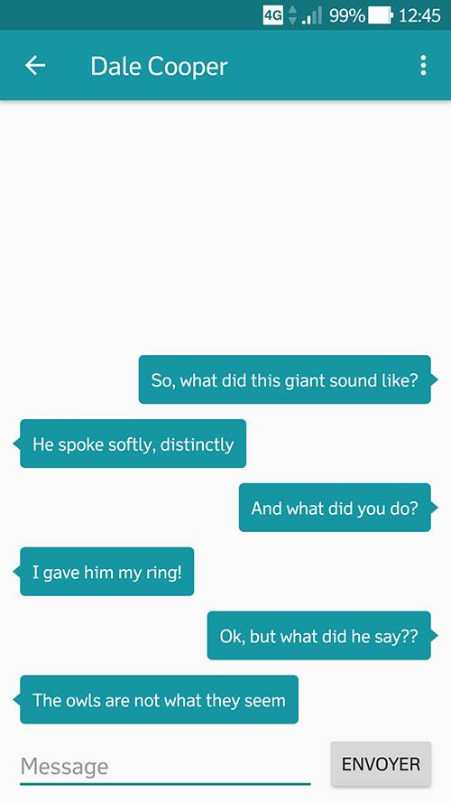
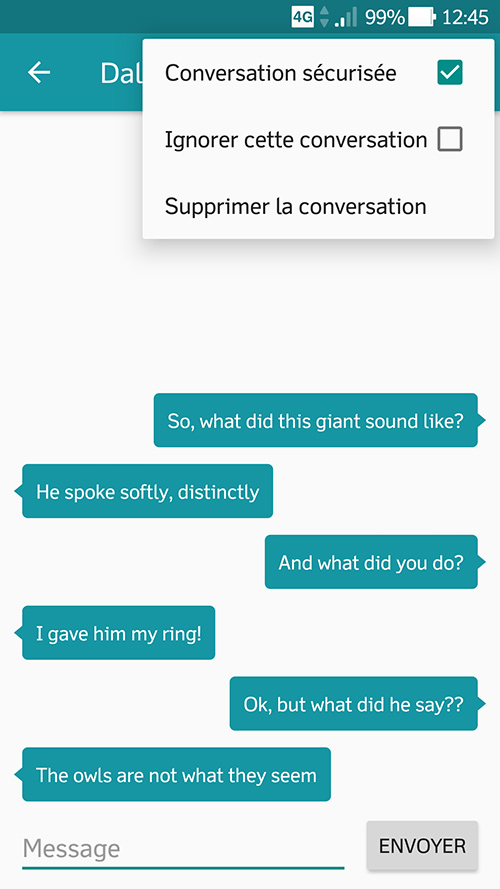

Projets Étudiants
Application Norn Talk (Octobre-décembre 2017)
Objectif : Concevoir et développer une application Android permettant d’envoyer des SMS chiffrés à des utilisateurs de l’application, afin d'assurer la confidentialité et sécurité de leurs échanges.
Contexte : Projet tuteuré, groupe de quatre membres, 2e année à l'IUT Informatique Paul Sabatier.
Note finale : 16,9/20




Made with by Benoît Pannetier © 2019
Finding Space by Takahiro Sakamoto